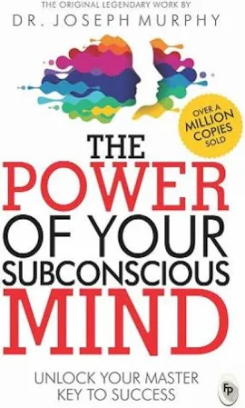

|  |
Author :Joshesp MurphyDate of Release :1967Pages :250Price :100 /- |
SummaryThe Power of Your Subconscious Mind talks about how Visualization and affirmation can change your thought process. Further, it gives you a clear idea of how much power your Subconscious Mind has and how you can control it with simple techniques. One of the key topics of this book is visualization and affirmation. Joseph Murphy also focuses on the law of attraction, now, about this I have my arguments which we will talk about. So let’s dive into it and see why a book published in 1963 is still a good read. 5 Core Lessons from The Power of Your Subconscious Mind If you truly believe in something then your Subconscious Mind will try its best to make your belief a reality. Visualization and affirmation are more powerful than you think. The placebo effect does work and it has been proven as well. There is room for everything, so don’t think negatively about other people. Get out of that race and focus on yourself. Having a hard time, sleep on it, and you will find a better solution. How Your Subconscious Mind Works Think of it as an iceberg, the upper part is your conscious and the bottom part is your subconscious mind. The Power of Your Subconscious Mind Summary_1 In the same way, if you tell yourself that I will exercise today at 3:00 PM then this order is given by your conscious mind. Now it’s up to the subconscious mind whether it wants to exercise or not. This is where your subconscious mind will do all the calculations, for example,
ReviewIt is one of the most brilliant and beloved spiritual self-help works of all time which can help you heal yourself, banish your fears, sleep better, enjoy better relationships and just feel happier. The techniques are simple and results come quickly. You can improve your relationships, your finances, your physical well-being. |
Author :Khaled HosseiniYear of Release :2003Pages :250Price :100 /- |
SummaryThe Power of Your Subconscious Mind talks about how Visualization and affirmation can change your thought process. Further, it gives you a clear idea of how much power your Subconscious Mind has and how you can control it with simple techniques. One of the key topics of this book is visualization and affirmation. Joseph Murphy also focuses on the law of attraction, now, about this I have my arguments which we will talk about. So let’s dive into it and see why a book published in 1963 is still a good read. 5 Core Lessons from The Power of Your Subconscious Mind If you truly believe in something then your Subconscious Mind will try its best to make your belief a reality. Visualization and affirmation are more powerful than you think. The placebo effect does work and it has been proven as well. There is room for everything, so don’t think negatively about other people. Get out of that race and focus on yourself. Having a hard time, sleep on it, and you will find a better solution. How Your Subconscious Mind Works Think of it as an iceberg, the upper part is your conscious and the bottom part is your subconscious mind. The Power of Your Subconscious Mind Summary_1 In the same way, if you tell yourself that I will exercise today at 3:00 PM then this order is given by your conscious mind. Now it’s up to the subconscious mind whether it wants to exercise or not. This is where your subconscious mind will do all the calculations, for example,
ReviewIt is one of the most brilliant and beloved spiritual self-help works of all time which can help you heal yourself, banish your fears, sleep better, enjoy better relationships and just feel happier. The techniques are simple and results come quickly. You can improve your relationships, your finances, your physical well-being. |
Author :John Ronald Reuel TolkienDate of Release :1967Pages :250Price :100 /- |
SummaryThe Power of Your Subconscious Mind talks about how Visualization and affirmation can change your thought process. Further, it gives you a clear idea of how much power your Subconscious Mind has and how you can control it with simple techniques. One of the key topics of this book is visualization and affirmation. Joseph Murphy also focuses on the law of attraction, now, about this I have my arguments which we will talk about. So let’s dive into it and see why a book published in 1963 is still a good read. 5 Core Lessons from The Power of Your Subconscious Mind If you truly believe in something then your Subconscious Mind will try its best to make your belief a reality. Visualization and affirmation are more powerful than you think. The placebo effect does work and it has been proven as well. There is room for everything, so don’t think negatively about other people. Get out of that race and focus on yourself. Having a hard time, sleep on it, and you will find a better solution. How Your Subconscious Mind Works Think of it as an iceberg, the upper part is your conscious and the bottom part is your subconscious mind. The Power of Your Subconscious Mind Summary_1 In the same way, if you tell yourself that I will exercise today at 3:00 PM then this order is given by your conscious mind. Now it’s up to the subconscious mind whether it wants to exercise or not. This is where your subconscious mind will do all the calculations, for example,
ReviewIt is one of the most brilliant and beloved spiritual self-help works of all time which can help you heal yourself, banish your fears, sleep better, enjoy better relationships and just feel happier. The techniques are simple and results come quickly. You can improve your relationships, your finances, your physical well-being. |